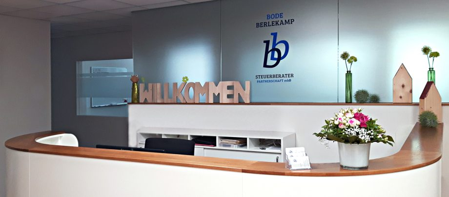

Seit 1987 in Neuenkirchen. Seit 2020 auch in Metelen.
Wir betreuen Unternehmen aus unterschiedlichsten Branchen. Häufig handelt es sich um mittelständische und inhabergeführte Familienunternehmen. Eine Vielzahl von Freiberuflern und Privatpersonen gehört ebenso zu unserem Mandantenkreis.
Der fachübergreifende Beratungsansatz unserer Kanzlei umfasst neben der klassischen Steuerberatung und der Finanz- und Lohnbuchführung die Baulohnabrechnung sowie die betriebswirtschaftliche Beratung. Ziel ist es, für unsere Mandanten individuell zugeschnittene Lösungen zu erarbeiten.
Unsere Arbeitsweise ist durch die persönliche Beziehung zum Mandanten geprägt und auf eine vertrauensvolle, langfristige Zusammenarbeit ausgerichtet.

Zwei Partner, eine Steuerberaterin in Metelen
Ihre Ansprechpartner
Jeder Mandant hat feste Ansprechpartner. Sie erreichen uns direkt per E-Mail oder über das Sekretariat.
- Frank BodeSteuerberater, Geschäftsführender GesellschafterFrank.Bode(at)stb-neuenkirchen.de
- Mark BerlekampSteuerberater, Geschäftsführender GesellschafterMark.Berlekamp(at)stb-neuenkirchen.de
- Annegret SchaperDipl.-Kauffrau, Steuerberaterin, MetelenAnnegret.Schaper(at)stb-metelen.de
- Linda BerlekampAssistenz der Geschäftsführunginfo(at)stb-neuenkirchen.de
- Stefanie HülsAssistenz der Geschäftsführunginfo(at)stb-neuenkirchen.de
- Marco LünnemannMaster of Taxation (FH), SteuerfachangestellterMarco.Luennemann(at)stb-neuenkirchen.de
- Petra SchlautmannSteuerfachangestellte, Staatl. gepr. BetriebswirtinPetra.Schlautmann(at)stb-neuenkirchen.de
- Ramona RengersSteuerfachangestellteRamona.Rengers(at)stb-neuenkirchen.de
- Andrea RichterSteuerfachwirtin, Bilanzbuchhalterin, Staatl. gepr. BetriebswirtinAndrea.Richter(at)stb-neuenkirchen.de
- Alexandra ArtmannSteuerfachangestellteAlexandra.Artmann(at)stb-neuenkirchen.de
- Sabine VolkmerSteuerfachangestellteSabine.Volkmer(at)stb-neuenkirchen.de
- Ingrid FlothBuchhalterinIngrid.Floth(at)stb-neuenkirchen.de
- Eva SchulteBilanzbuchhalterin, Staatl. gepr. BetriebswirtinEva.Schulte(at)stb-neuenkirchen.de
- Michaela BrinkSteuerfachwirtinMichaela.Brink(at)stb-neuenkirchen.de
- Inga GeigerSteuerfachangestellteInga.Geiger(at)stb-neuenkirchen.de
- Arusa JeyachandranAuszubildende SteuerfachangestellteArusa.Jeyachandran(at)stb-neuenkirchen.de
- Horst KohlscheSteuerfachangestellter, Neuenkirchen und MetelenHorst.Kohlsche(at)stb-neuenkirchen.de
- Noah SchulzSteuerfachangestellter, Neuenkirchen und MetelenNoah.Schulz(at)stb-neuenkirchen.de
Namen und Funktionen nach der Ansprechpartner-Seite der Kanzlei, Stand 28.10.2026.
Zwei Partner, zwei Übernahmen, zwei Standorte
Partnerschaftsregister AG Essen PR 2446 (Neuenkirchen) und PR 4543 (Metelen). Mitglieder der Steuerberaterkammer Westfalen-Lippe.
- 1987Gründung von Karl Dropmann in der Moränenstraße 2, Neuenkirchen
- 1994Umzug in die Rosenstraße 19
- 2006Umzug in die Emsdettener Straße 28
- 2008Frank Bode wird als Steuerberater bestellt
- 2010Mark Berlekamp wird als Steuerberater bestellt
- 2011Frank Bode tritt als Steuerberater in die gemeinsame Kanzlei ein: Steuerberater Dropmann Bode Partnerschaft
- 2012Übernahme der Mitarbeiter und Mandanten des Neuenkirchener Kollegen Konrad Berning
- 2014Mark Berlekamp wird weiterer Partner: Steuerberater Dropmann Bode Berlekamp Partnerschaft
- 2016Umzug an den Alphons-Hecking-Platz 11; Karl Dropmann scheidet aus Altersgründen aus
- 2017Bode | Berlekamp Steuerberater Partnerschaft mbB
- 2020Übernahme der Kanzlei von Steuerberaterin Annegret Schaper in Metelen, weitergeführt als Schaper & Partner
Noch eine Frage?
Telefon oder E-Mail genügt, wir melden uns zu den Öffnungszeiten. Vertrauliche Unterlagen bitte über die App oder die Belegzentrale.
Oder direkt: 05973 94 90-0
info@stb-neuenkirchen.de